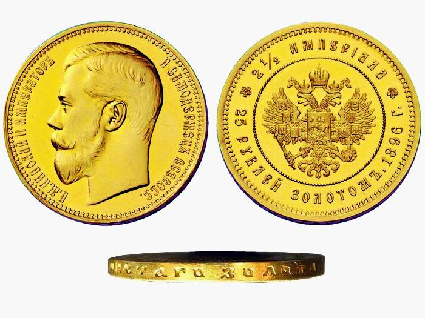

Что такое монета ?

Для понятия монеты Википедия дает следующее определение:
Монета (лат. moneta) — денежный знак, изготовленный из металла либо другого материала определённой формы, веса и достоинства. Кроме полноценных монет выпускаются разменные, коллекционные, памятные и инвестиционные монеты. Чаще всего монеты изготавливаются из металла методом чеканки и имеют форму правильного круга.
Следуя определению монеты, которое дает Википедия под термином монета подразумевается относительно тонкий слиток правильной цилиндрической формы из металла, который выпущен специально в качестве платежного средства.
История появления монет связана с поисками человечества самой удобной формы для металлических денег.
Появление монетСобственно среди товарных денег металлические предметы издавна имели преимущество перед другими, так как не портились со временем. Форма первых металлических денег была совершенно разной, но чаще в виде бытовых орудий труда – мотыги, ножи, гвозди и т.п. Самородки, песок из крупинок, слитки так же имели хождение в качестве товарных денег, так как имели потенциальную способность при накоплении стать полезным орудием труда, оружием, утварью или украшением. Удобство слитков определялось возможностью заключать в себе при небольшом весе и объёме относительно большую стоимостью. Причем слитки можно было разрубить на части, что обеспечивало деление стоимости, а так же простое соединение в большую.
История происхождения монетДолгое время именно слитки являлись самой распространенной формой металлических денег. На них ставили клеймо властителя, выпустившего их в обращение и пробу, указывающую на содержание ценного металла. В некоторых отдельных государствах доходили до стандартизации веса и формы слитков. Об этом говорят названия многих монет, пришедшие из древности, такие как фунт или гривна, которые были слитками металла равных по весу местным традиционным мерам веса. Однако огромную проблему представляло сравнение разнородных слитков металлов, их рубленых частей (рубли), что порой требовало квалификацию на уровне менял.
Происхождение монетПроблему сравнения металлических слитков (денег) решили в государстве Лидия, располагавшемся на территории современной Турции, когда царь Ардис выпустил собственные металлические деньги в виде округлых слитков из электрума (природного сплава золота и серебра). На одной из сторон слитка чеканился символ правителя – голова льва (и быка), а на оборотной – клеймо, указывающее на содержание в слитке благородных металлов. Было это около 685 года до н. э. Позднее его потомок царь Крёз (сын Алиатта 561-546 до н. э.) даже ввел стандарт чистоты металла (98 % золота или серебра) в собственных округлых слитках и на одной из сторон стали ставить клеймо с указанием содержания золота, которое стало прообразом пробы.
Эти округлые слитки еще не назывались монетами, так как название монета появится лишь в Древнем Риме, но округлая форма слитков становится очень популярной в ближайших государствах и быстро распространяется по всему Средиземноморью. Почти одновременно округлые слитки стали чеканить в греческом городе-государстве Эгина, где их, возможно, изобрели независимо. Собственно сегодня известно об использовании круглых слитков в качестве металлических денег еще несколькими столетиями ранее, но это было в Китае и они не получили широкого международного распространения.
Округлая форма металлических слитков решила многие проблемы при сравнении одинаковых слитков, особенно вопрос определения их подлинности. Достаточно было просто наложить один кружок на другой и сравнить изображения, чтобы убедиться в подлинности монет, если обе монеты были схожи. При подозрении на подделку, зная вес стандартной монеты, подозрительную взвешивали, но в быту чаще обходились простым осмотром. Это намного упростило и ускорило товарно-денежные отношения.
Округлая форма стала общепризнанной для металлических денег в Древней Греции, торговавшей с народами Европы, затем перешла на деньги Древнего Рима и многих варварских народов. Греки приписывали изобретение монеты героям своих мифов, а римляне — богам Янусу или Сатурну. Собственно современные названия противоположных сторон монеты – аверс и реверс – так же восходят к легендам о двуликом боге Янусе. Согласно воззрениям древних римлян, первые монеты чеканил Янус в честь бога времени Сатурна, который на корабле приплыл в Италию с острова Крит. Эти монеты имели на одной из сторон - изображение головы двуликого бога, а на оборотной - ростр - нос корабля Сатурна.
Что означает слово монетаДолгое время округлые слитки назывались в каждом государстве по-разному, а происхождение слова монета связано так же с римской богиней – Юноны, имевшей один из титулов Moneta, что означает «предостерегающая», так как слово монета имело происхождение от moneo, monere, что переводится как «предостерегать» (кстати, однокоренной с монетой термин мантия имеет смысл «указания / предрешения» судьбы человека, поэтому их носят не только монархи, но и судьи). Древние римляне считали, что богиня Монета Юнона много раз предостерегала их от землетрясений и построили в её честь огромный храмовый комплекс, на территории которого располагался монетный двор, чеканивший римские деньги. Вначале сами римляне стали употреблять слово монета для обозначения продукции из храма Юноны-Монеты, а потом слово монета стало нарицательным для круглых металлических слитков на всей огромной территории римской империи и ближайших государств, с которыми римляне вели торговлю. Термин монета почти без изменения вошел во многие европейские, а потом и мировые языки в качестве обозначения округлых металлических слитков, являющихся платежным средством.
Значение слова монетаВ узком смысле монета – это металлические деньги конкретной округлой формы - слиток металла в виде тонкого цилиндра, которые выпускаются эмитентом для обслуживания товарно-денежного обращения на определенной территории.
В наше время критерий округлой формы уже не является определяющим. Сегодня понятие монета стало намного шире и подразумевает физический носитель, отличный от бумажного или носителя электронных денег. Некоторые сувенирные монеты, однако, имеющие право платежного средства, выпускаются в разных материалах (вплоть до дерева) и в произвольной форме, далеко отличной от цилиндрической.
Чаще всего некруглые монеты рассчитаны на нумизматов или собирателей странностей и являются коммеморативными, посвященными каким-то событиям. В таких памятных монетах, ради художественной выразительности часто пренебрегают округлой формой, доказавшей свою практичность тысячелетней историей и свойственной рядовым монетам для обращения во всех государствах мира.
Название сторон монеты
У монеты три поверхности, которые получили специально название. Две плоские поверхности называют аверс и реверс монеты. Происхождение названий происходит от лиц двуликого бога Януса. До сих пор идут споры – как называются стороны монеты, если признаки главной стороны не очень явные. Сегодня уже нет монет с односторонней чеканкой или с одинаковыми изображениями на обеих сторонах монеты. Обычно все монеты несут на себе изображение властителя, герб государства и поясняющую надпись - легенда монеты - имеющую идеологическое значение как реклама властителя, государства или господствующего культа и номинал монеты – некоторое число, позволяющее определит стоимость монеты в денежном обращении государства, которое ее выпустило.

Рис.1 Для старых монет сторона с лицом властителя и легендой считается аверсом, хотя на реверсе может быть герб государства.
Аверс монетыСчитается, что аверс и есть лицевая сторона монеты, на которую по давней традиции наносили изображение властителя. Позднее в дополнение к изображению главная сторона монеты стала нести поясняющую надпись, указывающую на государственную принадлежность - обычно имя и титул властителя. Чаще всего легенда монеты и изображение властителя наносились на одну и ту же сторону, что позволяло сразу определит аверс монеты.
Сегодня аверс монеты – это та сторона монеты, которая своим изображением или легендой определяет её государственную принадлежность. Если об этом говорят и изображение, и легенда, то при определении сторон предпочтение отдаётся легенде.
Например, для современных монет России – сторона монеты с гербом и надписью «Банк России» считается аверсом, а сторона с номиналом – это реверс. В отношении юбилейных монет это сохраняется, хотя при этом реверс несет целевое изображение.
Реверс монетыПонятно, что реверс – это обратная сторона монеты по отношению к аверсу. Как правило, реверс монеты предназначался для служебной информации. На нем ставили номинал монеты и клеймо пробы. В наше время реверс может быть, по-сути, главной стороной, так как на памятных монетах он несет целевое изображение, раскрывающее тему, которой посвящена монета. Однако в первую очередь монета все же является платежным средством определенного государства, поэтому гербовая сторона монеты, раскрывающая государственную принадлежность важнее тематической на юбилейных монетах.
Гурт монетыТретья сторона монеты – это цилиндрическая поверхность по краю монеты, которую называют гурт. Раньше, когда технология чеканки монет не позволяла наносить изображения и надписи на гурт, злоумышленники спиливали часть металла по краям монеты, уменьшая ее диаметр. Собственно, в процессе обращения монеты происходит естественная потеря материла со всех ее сторон за счет истирания, но спиливание по краям монеты порой становилось настоящим бедствием, портившим монеты государств. Естественно, как только появились технологии, на гурт монет стали наносить надписи или узор, по которому стало возможным определить состояние монеты.
Обычно гладкий гурт монеты с вдавленной надписью применяют для монет, имеющих большой номинал, монет из драгоценных металлов, памятных монет. Более простой гурт в виде элементарных узоров или рубчиков характерен для монет малых номиналов.
Появление монет облегчило внутреннюю и международную торговлю, вытеснив из оборота слитковые металлические деньги. Так как государство, выпустившее монеты являлось гарантом пробы и веса, то отпала надобность во взвешивании и проверки. Стоимость легко делилась и объединялась, так как процесс передачи денег превратился в простой пересчет монет, считавшихся равными по стоимости. Появление разменных монет позволило отказаться от трудоемкой процедуры взвешивания и деления слитков.
Монетное дело в Древнем Риме достигло вершины в период наибольшего расширения территории Римской империи. Размеры и вес римских монет стал стандартом при чеканке монет следующих веков. В новое время значение монет заметно снижается. Государства отказались от золота и серебра как меры стоимости. При чеканке монет уже не обращают внимание на содержание ценных металлов в сплаве, а больше стараются сэкономить за счет дешевых, но практичных сплавов. Бумажные деньги и электронные деньги на пластиковых картах (безналичное денежное обращение) сместили монеты с трона основного средства платежа. Рядовые монеты сегодня – рабочие лошадки денежного оборота, их еще используют только по той причине, что в отличие от бумажных денег, они могут многократно участвовать в транзакциях, не теряя признаков платежеспособности.
Однако собирательство редкостей и антиквариата все больше становится популярным занятием среди населения, как и нумизматика в России. Интерес к монетам не пропадает, несмотря на то, что во всем мире монеты vjytnf теряют свое значение как средства платежа.
По материалам сайта : http://design-for.net/